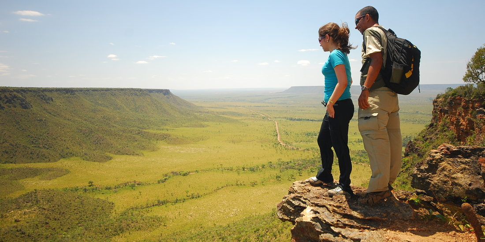

Mirante da Serra do Espírito Santo
Oferece um vista deslumbrante e privilegiada a quem vence o desafio de subir a serra por trilha e chegar lá. Saindo de Mateiros, são cerca de 30 km de estrada arenosa até a serra, onde começa a trilha íngreme de cerca de 500 metros. Ela conta com corrimão em alguns trechos e pontos de paradas com banquinhos para respirar e repor as energias. Caso o visitante tenha optado pelo passeio de manhã, é preciso sair bem cedo, por volta de 4 horas, por dois motivos: primeiro, porque a temperatura ainda está amena; e segundo, porque a grande recompensa é ver o nascer do sol lá de cima do mirante, tendo abaixo a natureza intocada e toda a exuberância do verde cortado por rios, riachos e lagoas que oferecem praias naturais de areias brancas e finas. Se a escolha for pela tarde, o melhor é esperar o sol declinar um pouco e sair lá pelas 16 horas, quando o calor é menos intenso, mas sem descuidar de proteger a pele e se hidratar. A recompensa nesse caso é ver o sol se por, lançando raios avermelhados sobre as dunas de areias cor de laranja. Como chegar: saindo de Mateiros ou São Félix, por estrada de chão